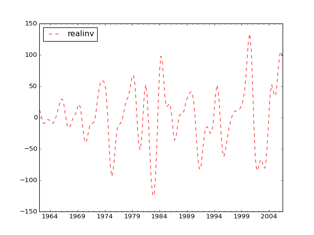

statsmodels.tsa.filters.bk_filter.bkfilter¶
-
statsmodels.tsa.filters.bk_filter.bkfilter(X, low=6, high=32, K=12)[source]¶ Baxter-King bandpass filter
Parameters: X : array-like
A 1 or 2d ndarray. If 2d, variables are assumed to be in columns.
low : float
Minimum period for oscillations, ie., Baxter and King suggest that the Burns-Mitchell U.S. business cycle has 6 for quarterly data and 1.5 for annual data.
high : float
Maximum period for oscillations BK suggest that the U.S. business cycle has 32 for quarterly data and 8 for annual data.
K : int
Lead-lag length of the filter. Baxter and King propose a truncation length of 12 for quarterly data and 3 for annual data.
Returns: Y : array
Cyclical component of X
Notes
Returns a centered weighted moving average of the original series. Where the weights a[j] are computed
a[j] = b[j] + theta, for j = 0, +/-1, +/-2, ... +/- K b[0] = (omega_2 - omega_1)/pi b[j] = 1/(pi*j)(sin(omega_2*j)-sin(omega_1*j), for j = +/-1, +/-2,...
and theta is a normalizing constant
theta = -sum(b)/(2K+1)
References
- Baxter, M. and R. G. King. “Measuring Business Cycles: Approximate
- Band-Pass Filters for Economic Time Series.” Review of Economics and Statistics, 1999, 81(4), 575-593.
Examples
>>> import statsmodels.api as sm >>> import pandas as pd >>> dta = sm.datasets.macrodata.load_pandas().data >>> dates = sm.tsa.datetools.dates_from_range('1959Q1', '2009Q3') >>> index = pd.DatetimeIndex(dates) >>> dta.set_index(index, inplace=True)
>>> cycles = sm.tsa.filters.bkfilter(dta[['realinv']], 6, 24, 12)
>>> import matplotlib.pyplot as plt >>> fig, ax = plt.subplots() >>> cycles.plot(ax=ax, style=['r--', 'b-']) >>> plt.show()
(Source code, png, hires.png, pdf)

{kind=link}
{kind=link}